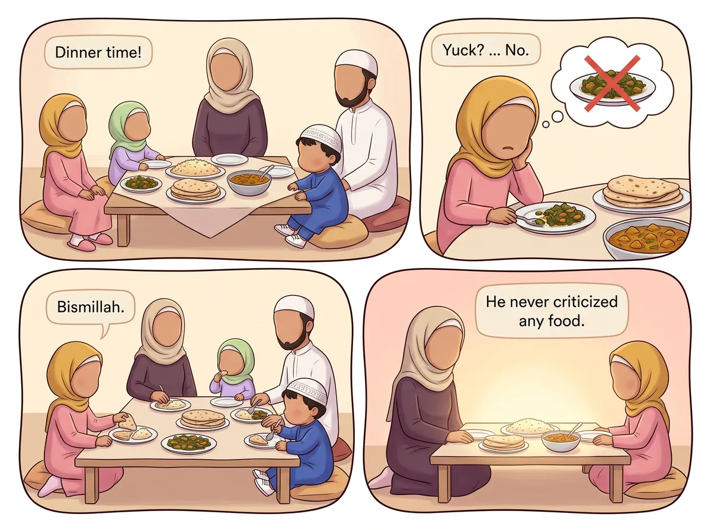
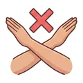
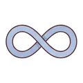
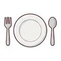
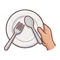
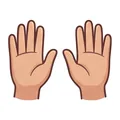

‹ All hadith
Never say bad things about food

عَنْ أَبِي هُرَيْرَةَ قَالَ: مَا عَابَ النَّبِيُّ ﷺ طَعَامًا قَطُّ إِنِ اشْتَهَاهُ أَكَلَهُ وَإِنْ كَرِهَهُ تَرَكَهُ
Say it with me: Mā 'āba n-Nabiyyu ﷺ ṭa'āman qaṭṭ; in ishtahāhu akalahu, wa in karihahu tarakah.
“The Prophet ﷺ never criticized any food; if he liked it, he ate it, and if he disliked it, he left it.”
Narrated by Abu Hurairah (RA) · Al-Bukhari & Muslim
What does it mean for me?
The Prophet ﷺ never said "Yuck!" about food. If he liked it, he ate it. If he didn't, he just quietly left it. Food is a gift from Allah, so we say Bismillah, say thank you, and never make a fuss.🔤 8 words
tap a card to hear it
🔊

مَا عَابَ
never criticized
🔊
النَّبِيُّ ﷺ
the Prophet ﷺ
🔊
طَعَامًا
any food
🔊

قَطُّ
ever
🔊
إِنِ اشْتَهَاهُ
if he liked it
🔊

أَكَلَهُ
he ate it
🔊

وَإِنْ كَرِهَهُ
and if he disliked it
🔊

تَرَكَهُ
he left it
⭐ Let's try it!
At dinner tonight, say "Bismillah" before eating and "Alhamdulillah" after — and no "yuck"!